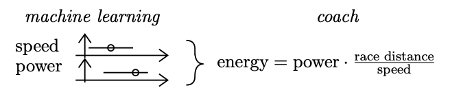

(He/Him)
Email:
vankuijk.kristian@gmail.com
Maastricht, Netherlands
Kristian van Kuijk on LinkedIn
Hi!
I'm a second-year MSc student in Data Science for Decision Making at Maastricht University, in the south of the Netherlands. I have a strong interest in conformal prediction and uncertainty quantification in machine learning.
I did my BSc at Maastricht University as well, in Data Science and Artificial Intelligence. At the end of my first year, I was invited to take part in the KE@Work Honours Programme in which I joined Visma. In short, KE@Work is a business placement for the brightest and most ambitious bachelor's students where students work in a company for two days a week tackling Data Science/AI challenges for two years. Within the Data Science team of Visma, I focused on projects for Team Jumbo-Visma (now Visma Lease a Bike), particularly our Calorie Prediction project. Currently, I'm performing two internships at ASML within the EUV Wafer Defectivity team.
At ASML, I first developed an algorithm to extract structured data from images of electron microscopy tools, more precisely quantifying SEM EDX spectra images. ASML EUV scanners work in a vacuum. Contrary to what is expected, particles are present on wafers. Each particle can break a chip (yield loss), which costs ASML and its customers time and money. To understand where the particle comes from, ASML receives material measurements (SEM/EDX spectra) of particles from customers' fabs. But... these are images and not in raw format. My algorithm allows to extract usable information and classify the particles through Deep Learning models.
Currently, I am working on my master thesis, titled Uncertainty Quantification in Time Series under Dsitribution Drift: Towards Conditional Coverage in Forecasting Particles per Wafer Pass Performance in EUV Systems. Because of the high risk setting, it is crucial to quantify the certainty of my underlying time series model. This means not only computing a single-point forecast, but a prediction set according to a significance value. I apply this on univariate modelling with exogenous variables under possible batch effect across customers, with field wafer defectivity data.
At Visma, I developed, deployed and monitored machine learning models for predicting the amount of calories required for a race for the benefit of Team Jumbo-Visma (ranked first on the UCI World Team Rankings 2023 and winner of the Tour de France 2023, considered as the most prestigious cycling race). Until 2020, Team Jumbo-Visma would start preparing their calorie estimates up to three weeks in advance to ensure they had adequate estimates per cyclist and per stage. This is a time-consuming task. To improve the team performance, I, along with the data science team of Visma Connect, built regression models to predict the calories burned by a rider without needing any human computation. The models provide coaches with the calorie needs for each cyclist per race. I was invited to the broadcast "Wetenschap Vandaag" (Science Today) on the Dutch national radio to cover my work. A replay of the show can be found below (half in Dutch, half in English). I also gave an interview on my work to New Scientist (link to article).
At the end of my bachelor's, I wrote my thesis Conformal Regression in Calorie Prediction for Team Jumbo-Visma, supervised by Dr. Christof Seiler. I investigated conformal regression techniques to provide prediction sets, quantifying the reliability of the models predictions. This allows Team Jumbo-Visma to adapt predictions based on the uncertainty of the forecasts. A paper on my bachelor's thesis can be found here.
I also worked on developing a Talent Identification Dashboard for the cycling team using performance statistics, race results and rider profiles. We predict relative PCS (Pro Cycling Stats) points for the upcoming two seasons per specialty (ITT, climber, sprinter). The model helps Team Jumbo-Visma identify the best talents at an early age.
Multi-Modal Embeddings for Isolating Cross-Platform Coordinated Information Campaigns on Social Media (co-authored with Prof. Dr. Anda Iamnitchi and Dr. Jerry Spanakis): multi-modal approach that identifies the social media messages potentially engaged in a coordinated information campaign across multiple platforms. Our approach incorporates textual content, temporal information and the underlying network of user and messages posted to identify groups of messages with unusual coordination patterns across multiple social media platforms. We apply our approach to content posted on four platforms related to the Syrian Civil Defence organization known as the White Helmets: Twitter, Facebook, Reddit, and YouTube. Results show that our approach identifies social media posts that link to news YouTube channels with similar factuality score, which is often an indication of coordinated operations. Our paper can be found here (Proceedings of the 5th Symposium on Multidisciplinary International Symposium on Disinformation in Open Online Media)
Argumentative Explanations for Group Recommender Systems (co-authored with Dr. Francesco Barile and Dr. Tjitze Rienstra): In this work, we propose a novel approach, which makes use of an argumentative framework built using information about the aspects that are connected to the recommended items. Such framework is used to generate recommendations, and related explanations. We provide a proof of concept on how to generate explanations for the group, as well as specific explanations for the group members, which use the information in the argumentative frameworks to enrich the explanations. Furthermore, we propose privacy-preserving versions for the explanations, as well as a graphical approach based on tag clouds. Our paper can be found here (Adjunct Proceedings of the 31st ACM Conference on User Modeling, Adaptation and Personalization).
Conformal Regression in Calorie Prediction for Team Jumbo-Visma (co-authored with Dr. Christof Seiler): UCI WorldTour races, the premier men's elite road cycling tour, are grueling events that put physical fitness and endurance of riders to the test. The coaches of Team Jumbo-Visma have long been responsible for predicting the energy needs of each rider of the Dutch team for every race on the calendar. Those must be estimated to ensure riders have the energy and resources necessary to maintain a high level of performance throughout a race. This task, however, is both time-consuming and challenging, as it requires precise estimates of race speed and power output. Traditionally, the approach to predicting energy needs has relied on judgement and experience of coaches, but this method has its limitations and often leads to inaccurate predictions. In this paper, we propose a new, more effective approach to predicting energy needs for cycling races. By predicting the speed and power with regression models, we provide the coaches with calorie needs estimates for each individual rider per stage instantly. In addition, we compare methods to quantify uncertainty using conformal prediction. Our paper can be found here (Proceedings of the Twelfth Symposium on Conformal and Probabilistic Prediction with Applications, volume 204 of Proceedings of Machine Learning Research).
Elected external officer (academic year 2021-2022) of MSV Incognito, the study association of the Department of Advanced Computing Sciences from Maastricht University. My role was to maintain and develop the relations with companies, sponsors, other student associations, and manage the yearly Career Day. I signed the biggest sponsorship contract in the history of the study association with Arvato Bertelsmann. Furthermore, I organized and led private tutoring for freshmen in computer science and mathematics courses (Discrete Mathematics, Calculus, Linear Algebra, Software Engineering, Data Structure and Algorithms).
As Student Ambassador, I present the Department of Advanced Computing Sciences from Maastricht University to prospective students during information fairs, open days, student for a day experience, campus tours and other events. I also take part in other communication and marketing activities such as interviews for the university website or photo shoots for the study programme's brochures.